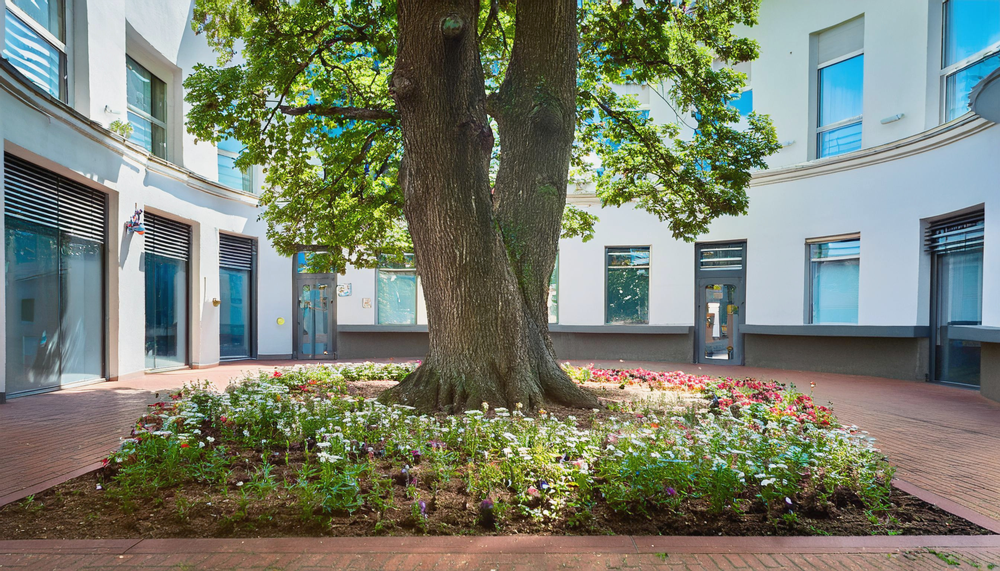

Web予約
Web予約クリニック概要
院長ご挨拶
こんにちは。佐藤医院の院長、佐藤太郎と申します。当院のホームページをご覧いただき、ありがとうございます。
佐藤医院では、「地域に根ざした医療」をモットーに、患者様一人ひとりに寄り添った医療を提供することを目指しております。日常的な健康管理から生活習慣病の予防、さらには専門的な診断や治療まで、幅広い内科診療を行い、地域の皆様の健康を支える役割を担っていきたいと考えております。
私たちは、患者様の不安を少しでも軽減し、安心して診療を受けていただけるよう、わかりやすい説明と丁寧な対応を心掛けております。また、近隣の医療機関とも連携し、必要に応じて高度医療へのアクセスもサポートいたします。どんな小さな不調でも、どうぞお気軽にご相談ください。
これからも、患者様の健康を第一に考え、地域の皆様に信頼される医療機関であり続けるため、スタッフ一同努力してまいります。どうぞよろしくお願いいたします。
佐藤医院院長 佐藤 太郎
診療方針
当院の診療方針は、「患者様の声に耳を傾け、共に歩む医療」です。内科を中心にさまざまな疾患へ対応し、症状を的確に診断して最適な治療を提供します。患者様との信頼関係を大切に、わかりやすく丁寧な説明を行い、納得いただける治療方針を一緒に考えます。病気の治療だけでなく、生活習慣の改善や予防についてもアドバイスし、患者様の健康管理を全力でサポートします。治療方法やお薬について不安があれば、遠慮なくお尋ねください。
地域に根ざした医療
佐藤医院は、地域の皆様の健康を守るために、長年にわたり地域医療を支えてきました。定期的な健康診断や健康相談も実施し、地域住民の皆様が健康な生活を送れるようサポートしています。病気の治療だけでなく予防の重要性も強く認識し、定期的な健診を通じた早期発見・早期治療に努めています。
ご家族全員をサポート
当院では、子どもから高齢者まですべての年代の患者様に対応し、各世代に必要な医療サービスを提供しています。予防医療や健康相談を通じて、ご家族全員のより良い生活習慣の定着を目指します。
- 小児科的対応：子どもの成長や発育に関するアドバイス、予防接種を行っています。
- 高齢者医療：高齢者の健康管理や介護予防、生活習慣病の管理をしっかりサポートします。
医療設備とチーム医療
診断精度を高めるため、最新の医療設備を導入し診療に活かしています。必要に応じて適切な検査を行い、迅速に対応します。また、医師・看護師・事務スタッフが一丸となるチーム医療を実践し、スタッフ全員が最新の治療法・技術の研鑽を積みながら、患者様に最適なケアを提供します。
医院の理念・方針
佐藤医院は、地域医療の一翼を担う医療機関として「患者様第一」の精神を大切にしています。単に病気を治療するだけでなく、患者様が心身ともに健やかな生活を送れるよう、あらゆる面からサポートすることを使命と考えています。
1.信頼関係を築く医療
患者様一人ひとりと向き合い、納得いただける説明を尽くす
2.予防医療の重視
健診・予防接種・健康相談で病気を未然に防ぐ
3.最先端の技術・設備
高度な医療機器と最新知識で精度の高い診断・治療を行う
4.ライフステージに応じた医療
小児から高齢者まで、各年代に必要なケアを提供
5.地域密着型の医療
気軽に相談できる存在として、健康セミナー等で地域に貢献
6.プライバシーと安全の確保
個人情報保護と感染症対策・衛生管理を徹底
7.チーム医療の推進
多職種が連携し、患者様に最適なケアを提供
患者様とともに歩む未来
佐藤医院では、患者様の健康を第一に考え、今後も安心・安全な医療を提供し続けます。どんな小さな悩みでも、お気軽にご相談ください。地域の皆様とともに、より健康で豊かな生活を築いていきたいと考えています。スタッフ一同、皆様のご来院を心よりお待ちしております。
施設紹介
